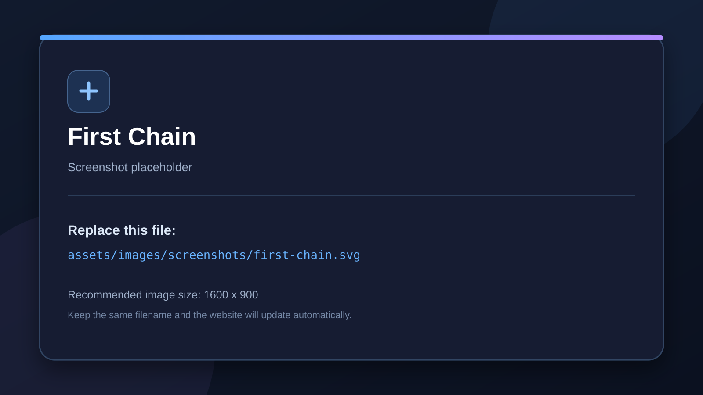

Your First Logic Chain
Understand the core Sensor → Controller → Actuator workflow.
The basic flow
1. Sensor
Detects an event or condition.
2. Controller
Combines sensor results and applies a logic mode.
3. Actuator
Performs the resulting action.
Example: input triggers movement
- Add an Input Map sensor.
- Select the input action and trigger mode.
- Add a Controller and leave its logic mode set to AND for a single-sensor chain.
- Add the appropriate 2D or 3D motion actuator.
- Connect the bricks and apply/rebuild the generated logic as required by your workflow.
